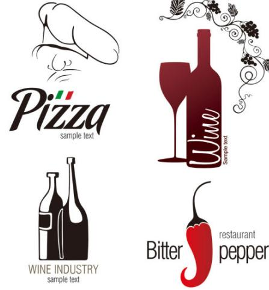

Accounting Software
Accounting software:
Accounting software is an application software that records and processes accounting transactions within functional modules such as accounts payable, accounts receivable, payroll, and trial balance. It functions as an accounting information system. We can make, deliver or construct a accounting software with a combination of a third-party application software packages with local modifications. It varies greatly in its complexity and cost.
Speed
Computerized packages for invoicing make the accounting process run faster and more efficiently--a major advantage. Instead of using the old-fashioned manual paper and pen, you can print professional-looking invoices fast. You even can send out invoices via e-mail. The faster invoices get out, the faster you are likely to get paid. Many invoicing or billing software packages interface with the rest of your accounting software, making the process of preparing invoices and recording them seamless, fast and automatic.
Minimize Errors
When you use a computerized system, you make fewer mistakes in calculating totals or in typing, decreasing confusion.Invoice software usually allows you to include a tax percentage when appropriate, with the system performing all calculations. This is a useful advantage, especially when you have detailed invoices where hours or specific items are billed at different rates. Once a system is set up properly, you pick and choose items to be invoiced and the rest is done for you.
Reporting
A major advantage of using a computerized invoice system is the capability to run reports to determine which customers have paid and which haven't. An aging report shows you who owes you, how much and for how long. This is done easily and puts you in control of your finances. You can contact customers who are late-payers, minimizing losses. A well-run business relies on prompt and reliable information, and a computerized invoicing system fits this requirement well.
Organization
It is easy to lose or forget about invoices, especially when they are prepared manually.They can get lost in the mail, or they may be misfiled in a manual system. With an accounting software package, the data is there--all organized in one place to be reviewed, reprinted and resent in case of problems. You usually can look in the system for invoices based on names, amounts or invoice numbers. It is a fast and easy process because the software organizes data as it is entered.
Web Application
A web application or web app is any application software that runs in a web browser and is created in a browser-supported programming language (such as the combination of JavaScript, HTML and CSS) and relies on a common web browser to render the application.
Web-based software is software you use over the internet with a web browser. You don’t have to install any CDs, download any software, or worry about upgrades. If you use an online bank or web-based email program like Gmail, Hotmail, or Yahoo Mail then you’ve already used web-based software before
When you use web-based software you don’t have to worry about anything technical — you can just do your work. We handle all the security and uptime and backups and upgrades and “IT guy” stuff. You can stay focused on what you’re good at and we’ll handle the rest.
There’s nothing to install, ever. With our software there’s nothing to download or install.Just log in with the web-browser you already have (Internet Explorer, Safari, or Firefox). It’s just like your online bank or web-based email program.
You can work from home, work, or on the road. When you use web-based software your office is everywhere.At work, at home, a hotel, at a client’s office, even on your mobile phone. You data is accessible anywhere with internet access.
Static Web
More and more people are looking for services and products on-line than every before. Peoples' habits are changing. People move to a new area and very often rely solely on the Internet to learn about the new area, research and find out who to go to for what.
Many people research and find their homes and jobs over the Internet. Most people are coming to expect that any professionally run business will have a web site. With a well-designed site your small business becomes a real player both on and off the net.
Add your web address to your stationary, business cards and other advertisements and you'll have visitors knowing exactly where to go for answers to their questions and where to send their friends to for great service. The more people know about you and your company the greater the chances you have for attracting new customers. More is generally a good thing when running a business, unless you're talking about expenses!More Advertising for Less Money. With a web site you can have pages of full-color advertisements that run 24 hours a day, 7 days a week! You get to present yourself and your services to your customers using many descriptive pages, images, interactive elements, etc. This tends to build peoples' trust, which in turn, makes them more likely to purchase your products and services.
Create a New Customer Base for your business. Did you ever notice that many people who use the Internet do so in place of the old school, traditional methods (newspapers, yellow pages, etc)? With a web site you will be able to reach a whole new segment of potential clients that may have missed your current ad campaigns. A good, informative web site will attract many people who may not have heard of you otherwise. Gather Contact Information A traditional printed newsletter can be an expensive and time consuming promotional action. With printing, postage and time spent, the costs can add up fast. With a web site you can have people who would like to receive your newsletter send you their email address. You can then email your newsletter to all of the people in your database, automatically! You don't need to pay for printing or postage for these newsletters. Continual contact with prospects is a proven tactic which directly leads to more inquiries and sales!Unit/Linux Program
Linux Daemon Program
A daemon process is a process which runs in background and has no controlling terminal. Because it would run without disturbing other programs, it can be used as a monitor to other programs or keeping logs of the system. It can also be used as other purposes, such as restart a key program automatically or monitoring the network flow.
 Bash Script
Bash Script
Bash Script could be a very helpful tool for manage the linux system. It helps you get rid of those tedious repeated works by simply run the script, and all the works will be automatically taking case of.
Services Configuration
Configuring services are always complicated and tedious. You'll never know where you messed up until you try thousands of times.
Business Logo
Business Logo
Can't find a perfect logo for your business? We know exactly how to make a logo that make your business stand out.
Data Visualization
Displaying Data
Data visualization is big topic, including displaying data, data mining, data analysis. What we can do, is helping you display your data intuitively. We not only could use rather traditional chart, such as pie chart, line chart, but also use multi-dimension graph display your data effectively. Normally, we would implement the diagram with javascript which can be showed in most browsers. It also could contain animations which make the data interactive.